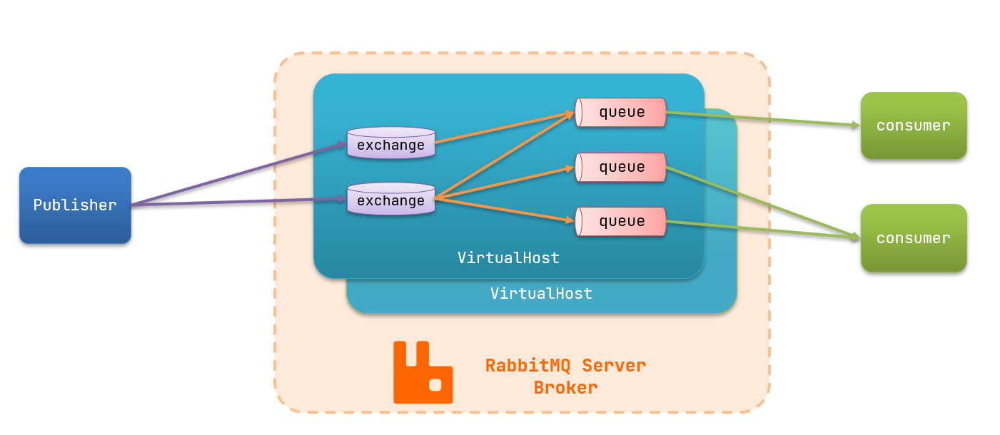
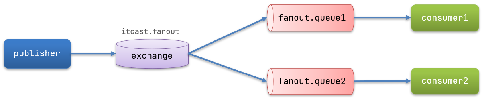

RabbitMQ
1.初识MQ
1.1.同步和异步通讯
微服务间通讯有同步和异步两种方式：
同步通讯：就像打电话，需要实时响应。
异步通讯：就像发邮件，不需要马上回复。

两种方式各有优劣，打电话可以立即得到响应，但是你却不能跟多个人同时通话。发送邮件可以同时与多个人收发邮件，但是往往响应会有延迟。
1.1.1.同步通讯
我们之前学习的Feign调用就属于同步方式，虽然调用可以实时得到结果，但存在下面的问题：

总结：
同步调用的优点：
- 时效性较强，可以立即得到结果
同步调用的问题：
- 耦合度高
- 性能和吞吐能力下降
- 有额外的资源消耗
- 有级联失败问题
1.1.2.异步通讯
异步调用则可以避免上述问题：
我们以购买商品为例，用户支付后需要调用订单服务完成订单状态修改，调用物流服务，从仓库分配响应的库存并准备发货。
在事件模式中，支付服务是事件发布者（publisher），在支付完成后只需要发布一个支付成功的事件（event），事件中带上订单id。
订单服务和物流服务是事件订阅者（Consumer），订阅支付成功的事件，监听到事件后完成自己业务即可。
为了解除事件发布者与订阅者之间的耦合，两者并不是直接通信，而是有一个中间人（Broker）。发布者发布事件到Broker，不关心谁来订阅事件。订阅者从Broker订阅事件，不关心谁发来的消息。

Broker 是一个像数据总线一样的东西，所有的服务要接收数据和发送数据都发到这个总线上，这个总线就像协议一样，让服务间的通讯变得标准和可控。
好处：
- 吞吐量提升：无需等待订阅者处理完成，响应更快速
- 故障隔离：服务没有直接调用，不存在级联失败问题
- 调用间没有阻塞，不会造成无效的资源占用
- 耦合度极低，每个服务都可以灵活插拔，可替换
- 流量削峰：不管发布事件的流量波动多大，都由Broker接收，订阅者可以按照自己的速度去处理事件
缺点：
- 架构复杂了，业务没有明显的流程线，不好管理
- 需要依赖于Broker的可靠、安全、性能
好在现在开源软件或云平台上 Broker 的软件是非常成熟的，比较常见的一种就是我们今天要学习的MQ技术。
1.2.技术对比：
MQ，中文是消息队列（MessageQueue），字面来看就是存放消息的队列。也就是事件驱动架构中的Broker。
比较常见的MQ实现：
- ActiveMQ
- RabbitMQ
- RocketMQ
- Kafka
几种常见MQ的对比：
| RabbitMQ | ActiveMQ | RocketMQ | Kafka | |
|---|---|---|---|---|
| 公司/社区 | Rabbit | Apache | 阿里 | Apache |
| 开发语言 | Erlang | Java | Java | Scala&Java |
| 协议支持 | AMQP，XMPP，SMTP，STOMP | OpenWire,STOMP，REST,XMPP,AMQP | 自定义协议 | 自定义协议 |
| 可用性 | 高 | 一般 | 高 | 高 |
| 单机吞吐量 | 一般 | 差 | 高 | 非常高 |
| 消息延迟 | 微秒级 | 毫秒级 | 毫秒级 | 毫秒以内 |
| 消息可靠性 | 高 | 一般 | 高 | 一般 |
追求可用性：Kafka、 RocketMQ 、RabbitMQ
追求可靠性：RabbitMQ、RocketMQ
追求吞吐能力：RocketMQ、Kafka
追求消息低延迟：RabbitMQ、Kafka
2.快速入门
2.1.安装RabbitMQ
安装RabbitMQ，参考课前资料：

MQ的基本结构：

RabbitMQ中的一些角色：
- publisher：生产者
- consumer：消费者
- exchange个：交换机，负责消息路由
- queue：队列，存储消息
- virtualHost：虚拟主机，隔离不同租户的exchange、queue、消息的隔离
2.2.RabbitMQ消息模型
RabbitMQ官方提供了5个不同的Demo示例，对应了不同的消息模型：

2.3.导入Demo工程
课前资料提供了一个Demo工程，mq-demo:

导入后可以看到结构如下：

包括三部分：
- mq-demo：父工程，管理项目依赖
- publisher：消息的发送者
- consumer：消息的消费者
2.4.入门案例
简单队列模式的模型图：

官方的HelloWorld是基于最基础的消息队列模型来实现的，只包括三个角色：
- publisher：消息发布者，将消息发送到队列queue
- queue：消息队列，负责接受并缓存消息
- consumer：订阅队列，处理队列中的消息
2.4.1.publisher实现
思路：
- 建立连接
- 创建Channel
- 声明队列
- 发送消息
- 关闭连接和channel
代码实现：
x1package cn.itcast.mq.helloworld;2
3import com.rabbitmq.client.Channel;4import com.rabbitmq.client.Connection;5import com.rabbitmq.client.ConnectionFactory;6import org.junit.Test;7
8import java.io.IOException;9import java.util.concurrent.TimeoutException;10
11public class PublisherTest {12 13 public void testSendMessage() throws IOException, TimeoutException {14 // 1.建立连接15 ConnectionFactory factory = new ConnectionFactory();16 // 1.1.设置连接参数，分别是：主机名、端口号、vhost、用户名、密码17 factory.setHost("192.168.150.101");18 factory.setPort(5672);19 factory.setVirtualHost("/");20 factory.setUsername("itcast");21 factory.setPassword("123321");22 // 1.2.建立连接23 Connection connection = factory.newConnection();24
25 // 2.创建通道Channel26 Channel channel = connection.createChannel();27
28 // 3.创建队列29 String queueName = "simple.queue";30 channel.queueDeclare(queueName, false, false, false, null);31
32 // 4.发送消息33 String message = "hello, rabbitmq!";34 channel.basicPublish("", queueName, null, message.getBytes());35 System.out.println("发送消息成功：【" + message + "】");36
37 // 5.关闭通道和连接38 channel.close();39 connection.close();40
41 }42}
2.4.2.consumer实现
代码思路：
- 建立连接
- 创建Channel
- 声明队列
- 订阅消息
代码实现：
xxxxxxxxxx411package cn.itcast.mq.helloworld;2
3import com.rabbitmq.client.*;4
5import java.io.IOException;6import java.util.concurrent.TimeoutException;7
8public class ConsumerTest {9
10 public static void main(String[] args) throws IOException, TimeoutException {11 // 1.建立连接12 ConnectionFactory factory = new ConnectionFactory();13 // 1.1.设置连接参数，分别是：主机名、端口号、vhost、用户名、密码14 factory.setHost("192.168.150.101");15 factory.setPort(5672);16 factory.setVirtualHost("/");17 factory.setUsername("itcast");18 factory.setPassword("123321");19 // 1.2.建立连接20 Connection connection = factory.newConnection();21
22 // 2.创建通道Channel23 Channel channel = connection.createChannel();24
25 // 3.创建队列26 String queueName = "simple.queue";27 channel.queueDeclare(queueName, false, false, false, null);28
29 // 4.订阅消息30 channel.basicConsume(queueName, true, new DefaultConsumer(channel){31 32 public void handleDelivery(String consumerTag, Envelope envelope,33 AMQP.BasicProperties properties, byte[] body) throws IOException {34 // 5.处理消息35 String message = new String(body);36 System.out.println("接收到消息：【" + message + "】");37 }38 });39 System.out.println("等待接收消息。。。。");40 }41}
2.5.总结
基本消息队列的消息发送流程：
- 建立connection
- 创建channel
- 利用channel声明队列
- 利用channel向队列发送消息
基本消息队列的消息接收流程：
- 建立connection
- 创建channel
- 利用channel声明队列
- 定义consumer的消费行为handleDelivery()
- 利用channel将消费者与队列绑定
3.SpringAMQP
SpringAMQP是基于RabbitMQ封装的一套模板，并且还利用SpringBoot对其实现了自动装配，使用起来非常方便。
SpringAmqp的官方地址：https://spring.io/projects/spring-amqp


SpringAMQP提供了三个功能：
- 自动声明队列、交换机及其绑定关系
- 基于注解的监听器模式，异步接收消息
- 封装了RabbitTemplate工具，用于发送消息
3.1.Basic Queue 简单队列模型
在父工程mq-demo中引入依赖
xxxxxxxxxx51<!--AMQP依赖，包含RabbitMQ-->2<dependency>3 <groupId>org.springframework.boot</groupId>4 <artifactId>spring-boot-starter-amqp</artifactId>5</dependency>
3.1.1.消息发送
首先配置MQ地址，在publisher服务的application.yml中添加配置：
xxxxxxxxxx71spring2 rabbitmq3 host192.168.150.101 # 主机名4 port5672 # 端口5 virtual-host/ # 虚拟主机6 usernameitcast # 用户名7 password123321 # 密码
然后在publisher服务中编写测试类SpringAmqpTest，并利用RabbitTemplate实现消息发送：
xxxxxxxxxx261package cn.itcast.mq.spring;2
3import org.junit.Test;4import org.junit.runner.RunWith;5import org.springframework.amqp.rabbit.core.RabbitTemplate;6import org.springframework.beans.factory.annotation.Autowired;7import org.springframework.boot.test.context.SpringBootTest;8import org.springframework.test.context.junit4.SpringRunner;9
10(SpringRunner.class)11public class SpringAmqpTest {13
14 15 private RabbitTemplate rabbitTemplate;16
17 18 public void testSimpleQueue() {19 // 队列名称20 String queueName = "simple.queue";21 // 消息22 String message = "hello, spring amqp!";23 // 发送消息24 rabbitTemplate.convertAndSend(queueName, message);25 }26}
3.1.2.消息接收
首先配置MQ地址，在consumer服务的application.yml中添加配置：
xxxxxxxxxx71spring2 rabbitmq3 host192.168.150.101 # 主机名4 port5672 # 端口5 virtual-host/ # 虚拟主机6 usernameitcast # 用户名7 password123321 # 密码
然后在consumer服务的cn.itcast.mq.listener包中新建一个类SpringRabbitListener，代码如下：
xxxxxxxxxx131package cn.itcast.mq.listener;2
3import org.springframework.amqp.rabbit.annotation.RabbitListener;4import org.springframework.stereotype.Component;5
6public class SpringRabbitListener {8
9 (queues = "simple.queue")10 public void listenSimpleQueueMessage(String msg) throws InterruptedException {11 System.out.println("spring 消费者接收到消息：【" + msg + "】");12 }13}
3.1.3.测试
启动consumer服务，然后在publisher服务中运行测试代码，发送MQ消息
3.2.WorkQueue
Work queues，也被称为（Task queues），任务模型。简单来说就是让多个消费者绑定到一个队列，共同消费队列中的消息。

当消息处理比较耗时的时候，可能生产消息的速度会远远大于消息的消费速度。长此以往，消息就会堆积越来越多，无法及时处理。
此时就可以使用work 模型，多个消费者共同处理消息处理，速度就能大大提高了。
3.2.1.消息发送
这次我们循环发送，模拟大量消息堆积现象。
在publisher服务中的SpringAmqpTest类中添加一个测试方法：
xxxxxxxxxx161/**2 * workQueue3 * 向队列中不停发送消息，模拟消息堆积。4 */5public void testWorkQueue() throws InterruptedException {7 // 队列名称8 String queueName = "simple.queue";9 // 消息10 String message = "hello, message_";11 for (int i = 0; i < 50; i++) {12 // 发送消息13 rabbitTemplate.convertAndSend(queueName, message + i);14 Thread.sleep(20);15 }16}
3.2.2.消息接收
要模拟多个消费者绑定同一个队列，我们在consumer服务的SpringRabbitListener中添加2个新的方法：
xxxxxxxxxx111(queues = "simple.queue")2public void listenWorkQueue1(String msg) throws InterruptedException {3 System.out.println("消费者1接收到消息：【" + msg + "】" + LocalTime.now());4 Thread.sleep(20);5}6
7(queues = "simple.queue")8public void listenWorkQueue2(String msg) throws InterruptedException {9 System.err.println("消费者2........接收到消息：【" + msg + "】" + LocalTime.now());10 Thread.sleep(200);11}注意到这个消费者sleep了1000秒，模拟任务耗时。
3.2.3.测试
启动ConsumerApplication后，在执行publisher服务中刚刚编写的发送测试方法testWorkQueue。
可以看到消费者1很快完成了自己的25条消息。消费者2却在缓慢的处理自己的25条消息。
也就是说消息是平均分配给每个消费者，并没有考虑到消费者的处理能力。这样显然是有问题的。
3.2.4.能者多劳
在spring中有一个简单的配置，可以解决这个问题。我们修改consumer服务的application.yml文件，添加配置：
xxxxxxxxxx51spring2 rabbitmq3 listener4 simple5 prefetch1 # 每次只能获取一条消息，处理完成才能获取下一个消息
3.2.5.总结
Work模型的使用：
- 多个消费者绑定到一个队列，同一条消息只会被一个消费者处理
- 通过设置prefetch来控制消费者预取的消息数量
3.3.发布/订阅
发布订阅的模型如图：

可以看到，在订阅模型中，多了一个exchange角色，而且过程略有变化：
Publisher：生产者，也就是要发送消息的程序，但是不再发送到队列中，而是发给X（交换机）
Exchange：交换机，图中的X。一方面，接收生产者发送的消息。另一方面，知道如何处理消息，例如递交给某个特别队列、递交给所有队列、或是将消息丢弃。到底如何操作，取决于Exchange的类型。Exchange有以下3种类型：
- Fanout：广播，将消息交给所有绑定到交换机的队列
- Direct：定向，把消息交给符合指定routing key 的队列
- Topic：通配符，把消息交给符合routing pattern（路由模式） 的队列
Consumer：消费者，与以前一样，订阅队列，没有变化
Queue：消息队列也与以前一样，接收消息、缓存消息。
Exchange（交换机）只负责转发消息，不具备存储消息的能力，因此如果没有任何队列与Exchange绑定，或者没有符合路由规则的队列，那么消息会丢失！
3.4.Fanout
Fanout，英文翻译是扇出，我觉得在MQ中叫广播更合适。

在广播模式下，消息发送流程是这样的：
- 1） 可以有多个队列
- 2） 每个队列都要绑定到Exchange（交换机）
- 3） 生产者发送的消息，只能发送到交换机，交换机来决定要发给哪个队列，生产者无法决定
- 4） 交换机把消息发送给绑定过的所有队列
- 5） 订阅队列的消费者都能拿到消息
我们的计划是这样的：
- 创建一个交换机 itcast.fanout，类型是Fanout
- 创建两个队列fanout.queue1和fanout.queue2，绑定到交换机itcast.fanout

3.4.1.声明队列和交换机
Spring提供了一个接口Exchange，来表示所有不同类型的交换机：

在consumer中创建一个类，声明队列和交换机：
xxxxxxxxxx521package cn.itcast.mq.config;2
3import org.springframework.amqp.core.Binding;4import org.springframework.amqp.core.BindingBuilder;5import org.springframework.amqp.core.FanoutExchange;6import org.springframework.amqp.core.Queue;7import org.springframework.context.annotation.Bean;8import org.springframework.context.annotation.Configuration;9
10public class FanoutConfig {12 /**13 * 声明交换机14 * @return Fanout类型交换机15 */16 17 public FanoutExchange fanoutExchange(){18 return new FanoutExchange("itcast.fanout");19 }20
21 /**22 * 第1个队列23 */24 25 public Queue fanoutQueue1(){26 return new Queue("fanout.queue1");27 }28
29 /**30 * 绑定队列和交换机31 */32 33 public Binding bindingQueue1(Queue fanoutQueue1, FanoutExchange fanoutExchange){34 return BindingBuilder.bind(fanoutQueue1).to(fanoutExchange);35 }36
37 /**38 * 第2个队列39 */40 41 public Queue fanoutQueue2(){42 return new Queue("fanout.queue2");43 }44
45 /**46 * 绑定队列和交换机47 */48 49 public Binding bindingQueue2(Queue fanoutQueue2, FanoutExchange fanoutExchange){50 return BindingBuilder.bind(fanoutQueue2).to(fanoutExchange);51 }52}
3.4.2.消息发送
在publisher服务的SpringAmqpTest类中添加测试方法：
xxxxxxxxxx81public void testFanoutExchange() {3 // 队列名称4 String exchangeName = "itcast.fanout";5 // 消息6 String message = "hello, everyone!";7 rabbitTemplate.convertAndSend(exchangeName, "", message);8}
3.4.3.消息接收
在consumer服务的SpringRabbitListener中添加两个方法，作为消费者：
xxxxxxxxxx91(queues = "fanout.queue1")2public void listenFanoutQueue1(String msg) {3 System.out.println("消费者1接收到Fanout消息：【" + msg + "】");4}5
6(queues = "fanout.queue2")7public void listenFanoutQueue2(String msg) {8 System.out.println("消费者2接收到Fanout消息：【" + msg + "】");9}
3.4.4.总结
交换机的作用是什么？
- 接收publisher发送的消息
- 将消息按照规则路由到与之绑定的队列
- 不能缓存消息，路由失败，消息丢失
- FanoutExchange的会将消息路由到每个绑定的队列
声明队列、交换机、绑定关系的Bean是什么？
- Queue
- FanoutExchange
- Binding
3.5.Direct
在Fanout模式中，一条消息，会被所有订阅的队列都消费。但是，在某些场景下，我们希望不同的消息被不同的队列消费。这时就要用到Direct类型的Exchange。

在Direct模型下：
- 队列与交换机的绑定，不能是任意绑定了，而是要指定一个
RoutingKey（路由key） - 消息的发送方在 向 Exchange发送消息时，也必须指定消息的
RoutingKey。 - Exchange不再把消息交给每一个绑定的队列，而是根据消息的
Routing Key进行判断，只有队列的Routingkey与消息的Routing key完全一致，才会接收到消息
案例需求如下：
- 利用@RabbitListener声明Exchange、Queue、RoutingKey
- 在consumer服务中，编写两个消费者方法，分别监听direct.queue1和direct.queue2
- 在publisher中编写测试方法，向itcast. direct发送消息

3.5.1.基于注解声明队列和交换机
基于@Bean的方式声明队列和交换机比较麻烦，Spring还提供了基于注解方式来声明。
在consumer的SpringRabbitListener中添加两个消费者，同时基于注解来声明队列和交换机：
xxxxxxxxxx171(bindings = (2 value = (name = "direct.queue1"),3 exchange = (name = "itcast.direct", type = ExchangeTypes.DIRECT),4 key = {"red", "blue"}5))6public void listenDirectQueue1(String msg){7 System.out.println("消费者接收到direct.queue1的消息：【" + msg + "】");8}9
10(bindings = (11 value = (name = "direct.queue2"),12 exchange = (name = "itcast.direct", type = ExchangeTypes.DIRECT),13 key = {"red", "yellow"}14))15public void listenDirectQueue2(String msg){16 System.out.println("消费者接收到direct.queue2的消息：【" + msg + "】");17}
3.5.2.消息发送
在publisher服务的SpringAmqpTest类中添加测试方法：
xxxxxxxxxx91public void testSendDirectExchange() {3 // 交换机名称4 String exchangeName = "itcast.direct";5 // 消息6 String message = "红色警报！日本乱排核废水，导致海洋生物变异，惊现哥斯拉！";7 // 发送消息8 rabbitTemplate.convertAndSend(exchangeName, "red", message);9}
3.5.3.总结
描述下Direct交换机与Fanout交换机的差异？
- Fanout交换机将消息路由给每一个与之绑定的队列
- Direct交换机根据RoutingKey判断路由给哪个队列
- 如果多个队列具有相同的RoutingKey，则与Fanout功能类似
基于@RabbitListener注解声明队列和交换机有哪些常见注解？
- @Queue
- @Exchange
3.6.Topic
3.6.1.说明
Topic类型的Exchange与Direct相比，都是可以根据RoutingKey把消息路由到不同的队列。只不过Topic类型Exchange可以让队列在绑定Routing key 的时候使用通配符！
Routingkey 一般都是有一个或多个单词组成，多个单词之间以”.”分割，例如： item.insert
通配符规则：
#：匹配一个或多个词
*：匹配不多不少恰好1个词
举例：
item.#：能够匹配item.spu.insert 或者 item.spu
item.*：只能匹配item.spu
图示：

解释：
- Queue1：绑定的是
china.#，因此凡是以china.开头的routing key都会被匹配到。包括china.news和china.weather - Queue2：绑定的是
#.news，因此凡是以.news结尾的routing key都会被匹配。包括china.news和japan.news
案例需求：
实现思路如下：
- 并利用@RabbitListener声明Exchange、Queue、RoutingKey
- 在consumer服务中，编写两个消费者方法，分别监听topic.queue1和topic.queue2
- 在publisher中编写测试方法，向itcast. topic发送消息

3.6.2.消息发送
在publisher服务的SpringAmqpTest类中添加测试方法：
xxxxxxxxxx121/**2 * topicExchange3 */4public void testSendTopicExchange() {6 // 交换机名称7 String exchangeName = "itcast.topic";8 // 消息9 String message = "喜报！孙悟空大战哥斯拉，胜!";10 // 发送消息11 rabbitTemplate.convertAndSend(exchangeName, "china.news", message);12}
3.6.3.消息接收
在consumer服务的SpringRabbitListener中添加方法：
xxxxxxxxxx171(bindings = (2 value = (name = "topic.queue1"),3 exchange = (name = "itcast.topic", type = ExchangeTypes.TOPIC),4 key = "china.#"5))6public void listenTopicQueue1(String msg){7 System.out.println("消费者接收到topic.queue1的消息：【" + msg + "】");8}9
10(bindings = (11 value = (name = "topic.queue2"),12 exchange = (name = "itcast.topic", type = ExchangeTypes.TOPIC),13 key = "#.news"14))15public void listenTopicQueue2(String msg){16 System.out.println("消费者接收到topic.queue2的消息：【" + msg + "】");17}
3.6.4.总结
描述下Direct交换机与Topic交换机的差异？
- Topic交换机接收的消息RoutingKey必须是多个单词，以
**.**分割 - Topic交换机与队列绑定时的bindingKey可以指定通配符
#：代表0个或多个词*：代表1个词
3.7.消息转换器
之前说过，Spring会把你发送的消息序列化为字节发送给MQ，接收消息的时候，还会把字节反序列化为Java对象。

只不过，默认情况下Spring采用的序列化方式是JDK序列化。众所周知，JDK序列化存在下列问题：
- 数据体积过大
- 有安全漏洞
- 可读性差
我们来测试一下。
3.7.1.测试默认转换器
我们修改消息发送的代码，发送一个Map对象：
xxxxxxxxxx91public void testSendMap() throws InterruptedException {3 // 准备消息4 Map<String,Object> msg = new HashMap<>();5 msg.put("name", "Jack");6 msg.put("age", 21);7 // 发送消息8 rabbitTemplate.convertAndSend("simple.queue","", msg);9}
停止consumer服务
发送消息后查看控制台：

3.7.2.配置JSON转换器
显然，JDK序列化方式并不合适。我们希望消息体的体积更小、可读性更高，因此可以使用JSON方式来做序列化和反序列化。
在publisher和consumer两个服务中都引入依赖：
xxxxxxxxxx51<dependency>2 <groupId>com.fasterxml.jackson.dataformat</groupId>3 <artifactId>jackson-dataformat-xml</artifactId>4 <version>2.9.10</version>5</dependency>配置消息转换器。
在启动类中添加一个Bean即可：
xxxxxxxxxx41public MessageConverter jsonMessageConverter(){3 return new Jackson2JsonMessageConverter();4}